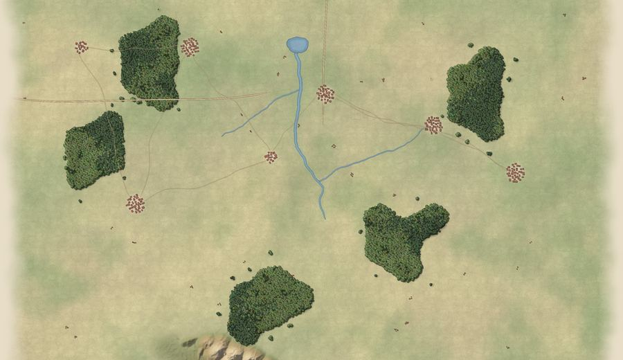
The Axis
Poland to Berlin
From the first days of September 1939 to the last stand in the Reich, and a what-if road to Washington for the boldest commanders.
The Second World War · 1939 – 1945
A turn-based hex wargame for iPhone and iPad. Command the Wehrmacht, the Western Allies or the Red Army across 48 battles on hand-drawn operational maps.
Choose your side
How you win decides where the war goes next: a fast, decisive victory opens a different road through the campaign, and a defeat sends you down a harder one.

Poland to Berlin
From the first days of September 1939 to the last stand in the Reich, and a what-if road to Washington for the boldest commanders.
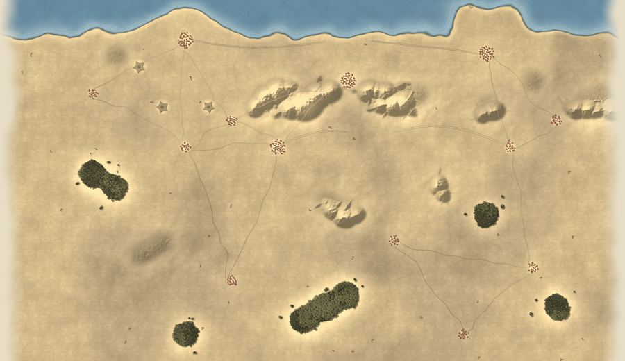
Dunkirk to the Elbe
The British and Americans from the beaches of Dunkirk through the desert, Italy and Normandy to the Rhine and the race for Berlin.
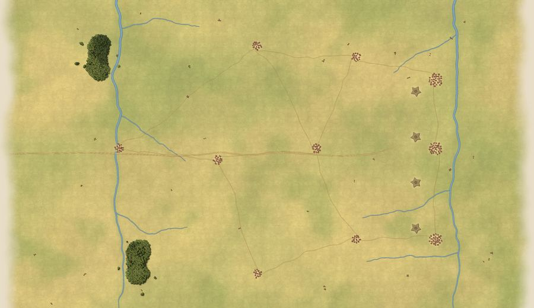
From the frontier to the Reichstag
Survive 1941, hold Moscow and Stalingrad, then turn the tide at Kursk and drive the long road west to Berlin.
What's inside
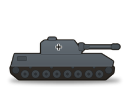
Create yourself and rise from Major to Field Marshal. Levels bring attributes that strengthen the whole army; Command Points unlock tactics such as an artillery barrage, air superiority or winter gear.
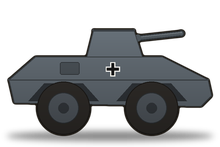
Post them to study historical battles, study the enemy's weaknesses or train troops. Chapters of the Field Manual unlock advice on the battlefield itself.
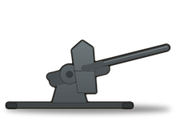
Before you commit, the preview shows attack and defence, every modifier from terrain to experience, and the losses each side can expect.
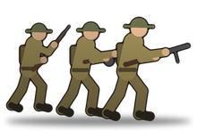
Your core units carry their experience, names and medals from battle to battle, from Green recruits to Guards. Lose a veteran and it's gone for good.
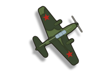
Rain and snow slow the advance, mud grounds the air force, and with fog of war on you see only what your units can see.
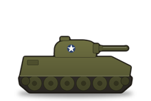
Three stars to earn in every battle, and a new operation each week with its own twist and a Game Center leaderboard.
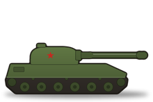
From your first victory to every front won, plus a war map of your campaign and a battle report to share.
Any of the 48 battles against another player through Game Center. Move when it suits you; a notification tells you when it's your turn again.
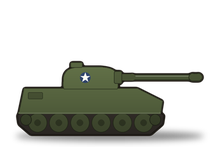
One purchase, everything included. Every battle plays offline, and saves sync through your own iCloud account between iPhone and iPad.
Europe and North Africa · 1939 – 1945
Every battle you fight is marked on the campaign map, with the roads still ahead of you.
On iPhone and iPad
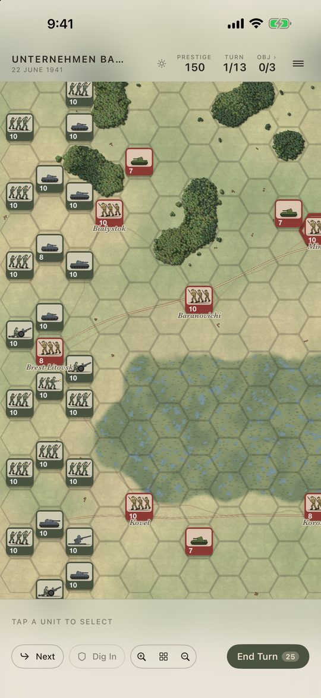
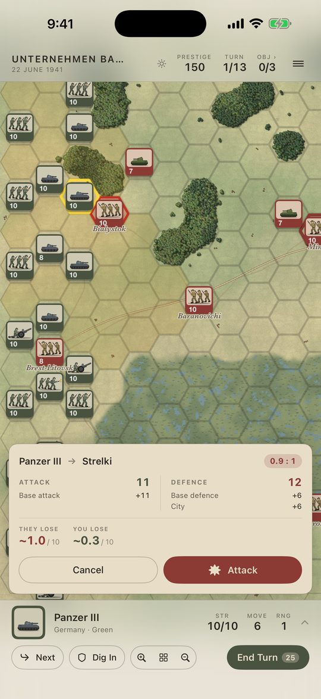
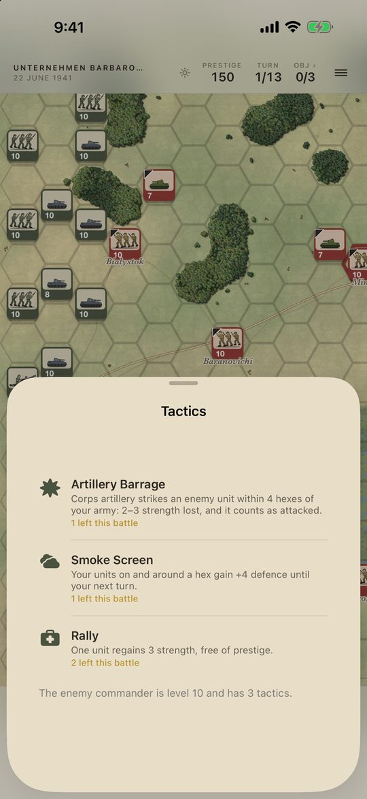
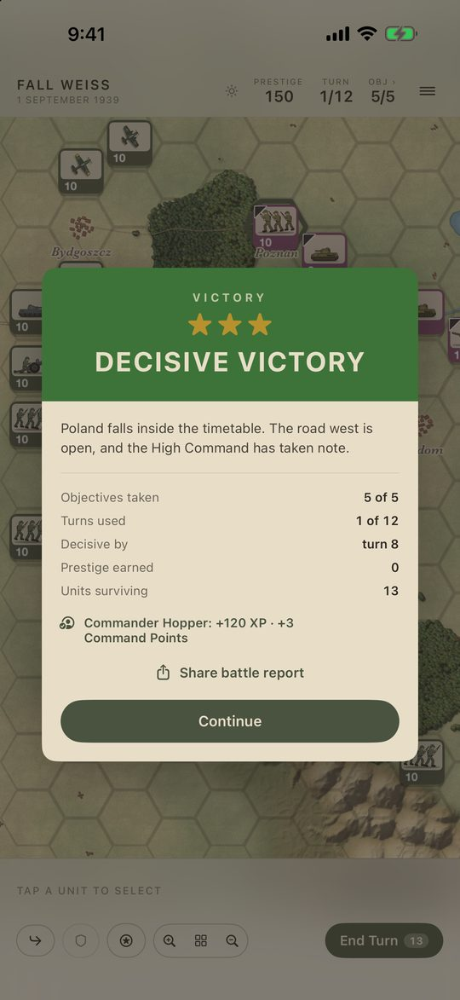
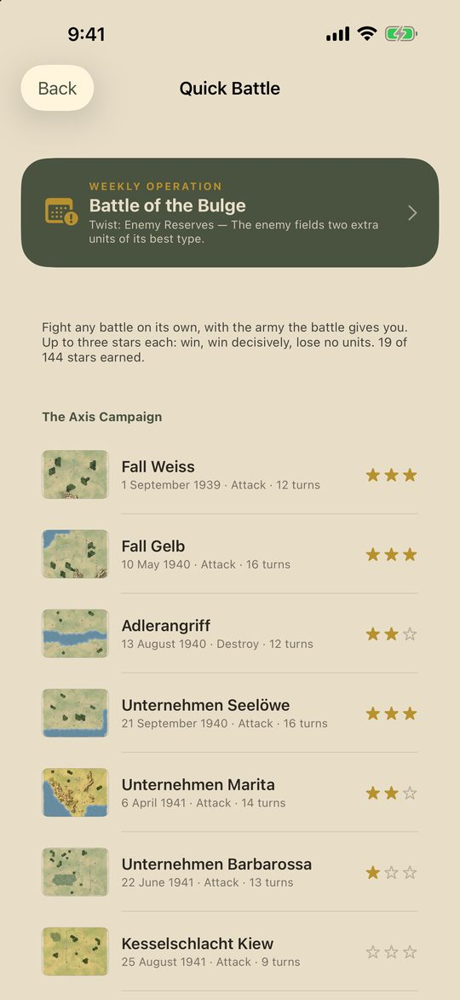
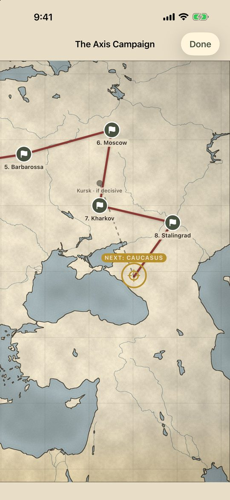
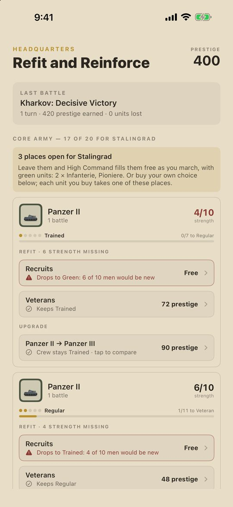
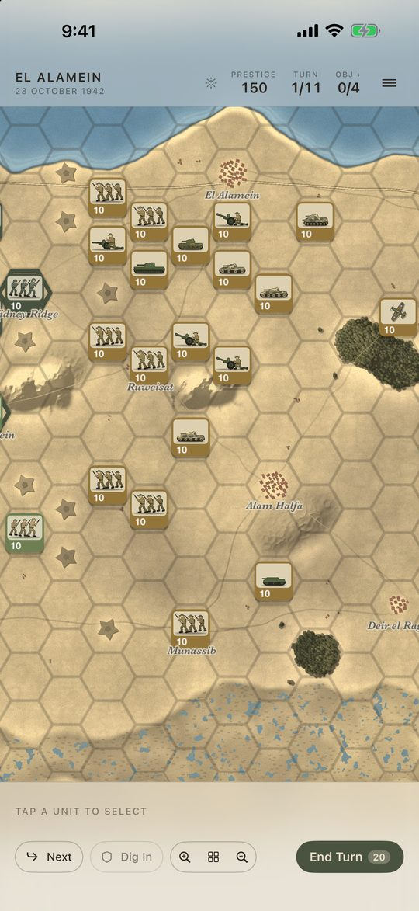
Support
Questions, bug reports and suggestions are welcome at levihopper+panzerkeil@gmail.com.
For a bug, please include your device, iOS version, and the battle and turn where it happened.
Starting a different campaign, difficulty levels, saves and iCloud, achievements, postings and the Field Manual.